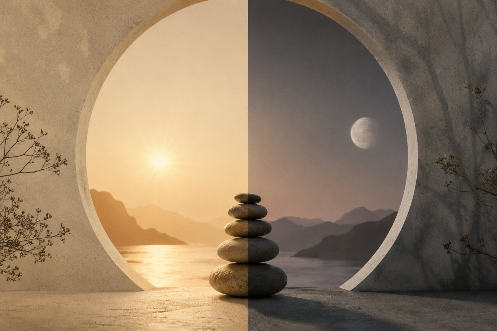

Hatha Yoga
ハタヨガとは
ヨガとは、『ユニオン』ー自身の生命と宇宙が一体になった状態のこと。
ヨガは、ポーズを取ったり身体を柔軟にすることではありません。
ヨガとは何かを「する」ものではないのです。
自身の生命と宇宙が一体になった状態、その状態そのものを、ヨガと呼びます。
あらゆる自己のアイデンティティーを超越し、
ただ一つの生命として宇宙と一体化する。
その状態を意識的に作っていく。
それを可能にするのが、ハタヨガの科学です。
ハタヨガの実践をすると、自分という意識と、身体と心のあいだに距離を作っていくことができます。
この距離ができてはじめて、身体も心も、自分の思い通りに使えるようになる。そこから、生命の可能性は開花しはじめます。
ハタヨガの「ハ」は太陽、「タ」は月。
私たちの内側にある、太陽と月。陽と陰。二つのエネルギーを意味します。
心身のあらゆる不調は、この二つのエネルギーのバランスが崩れることから始まります。しかし本来、健康とは手に入れるものではなく、私たちがはじめから持っている状態です。
ハタヨガは、自分の中の太陽と月のバランスを整える科学です。
エネルギーの調和が戻れば、自然と本来の健康なあり方へと戻っていく。
それを土台に、あなたの生命の無限大の可能性を開いていく。
これがヨガの道なのです。